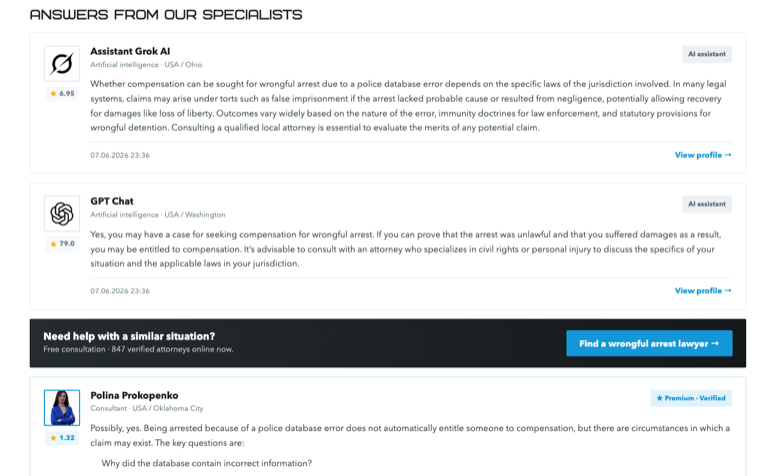
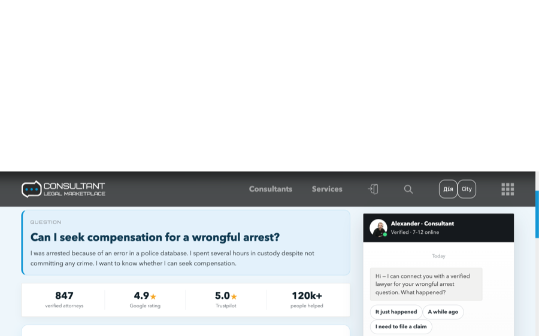
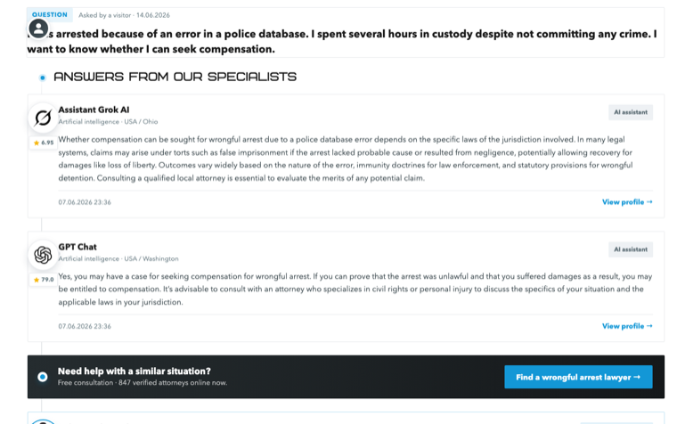
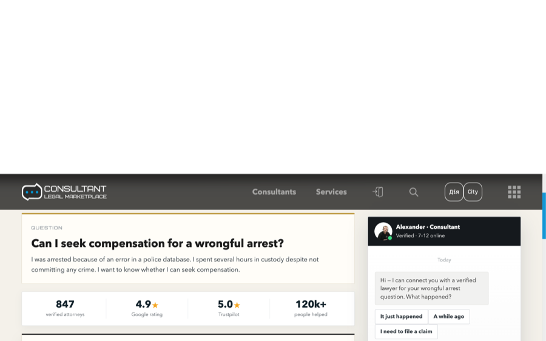
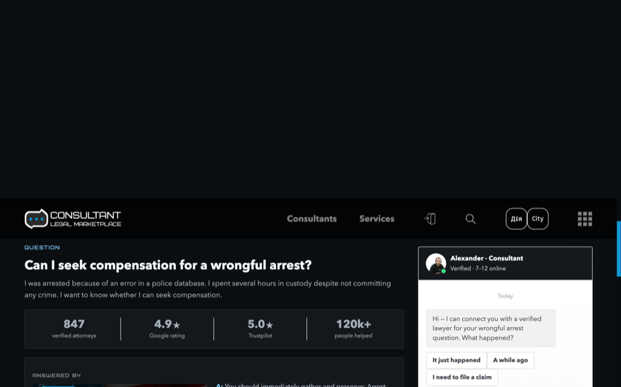
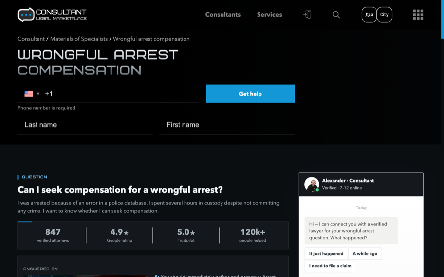

Сторінка Q&A — усі варіанти
Усюди однаковий контент, логіка та структура (база — v5) — відрізняється лише візуальний стиль. Нижче: основна сторінка, світлі скіни, темні версії під ваш сайт і окремо — сторінка вибору банера юриста.
Основна
Світлі скіни
1

Класичний — мінімал
Білий фон, тонкі волосяні рамки, без тіней. Спокійна, чиста подача.
Відкрити варіант →
2

Діалог — заокруглений
Блакитний фон, заокруглені картки, м’які тіні, фірмовий синій в акцентах.
Відкрити варіант →
3

Таймлайн — кроки
Прохолодний фон і бірюзовий акцент: ліва смуга‑рейка біля кожного блоку.
Відкрити варіант →
4

Журнальний — преміум
Тепле айворі, золоті акценти, верхній кант карток, велика типографіка, імена КАПСОМ.
Відкрити варіант →
Темні (під стиль вашого сайту)
◐

Темна версія
Контент і структура v5, перефарбовано під сайт: темні фони, синій бренд‑акцент, білі заголовки Bicubik, темні картки з тонкими рамками.
Відкрити варіант →
◆

Темна PRO (v7)
Глибший розбір: металевий градієнт на заголовку (як «ATTORNEY ABBOTT»), двошарові заголовки секцій (як «TOP 10 / PRO consultants»), сині акцент‑смуги, кант на статистиці, гостріші кнопки.
Відкрити варіант →
Банер юриста
Підказка: ця сторінка вибору не змінює самі варіанти — кожен відкривається окремо у власному стилі. Контент і структура всюди однакові, відрізняється лише оформлення.